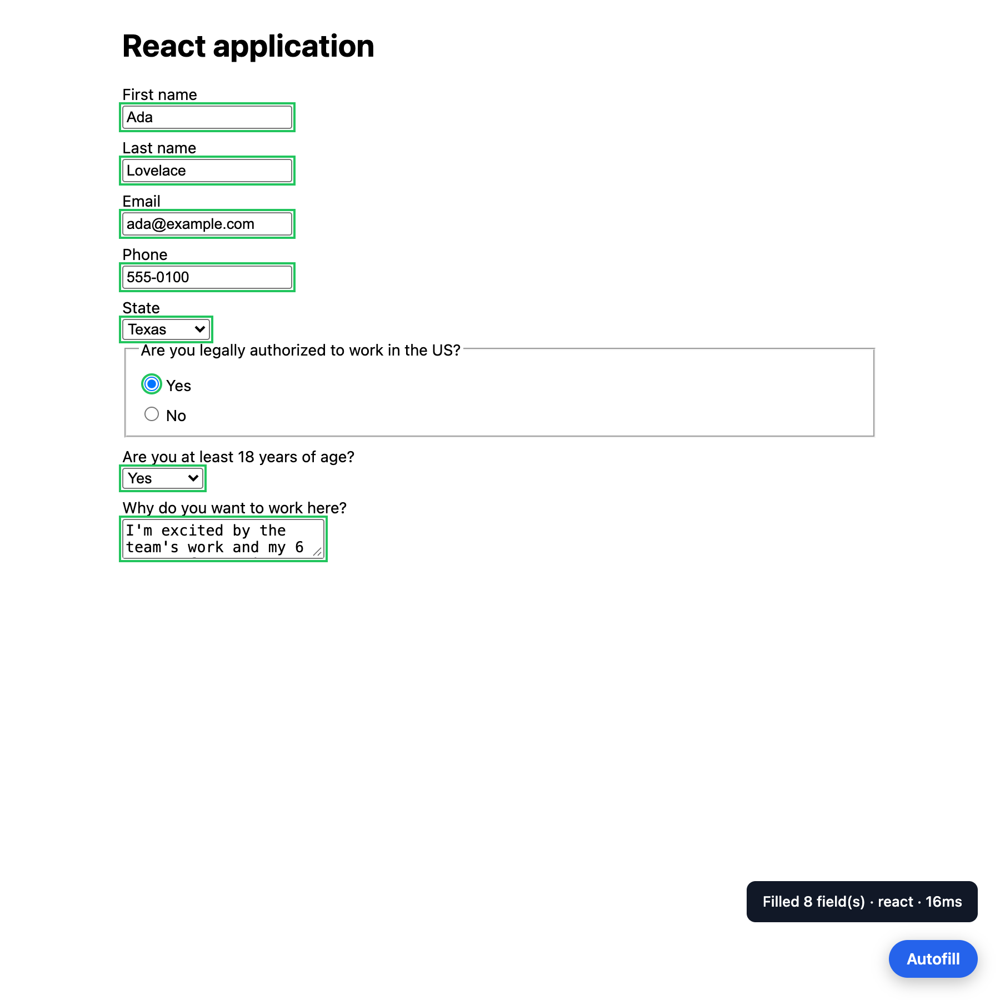
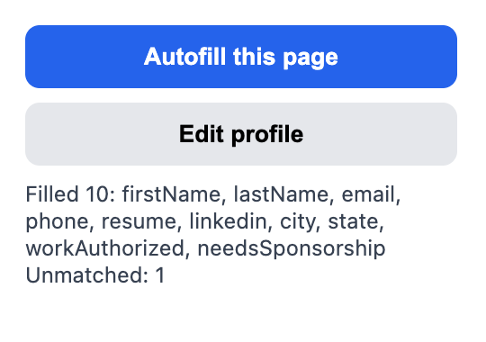
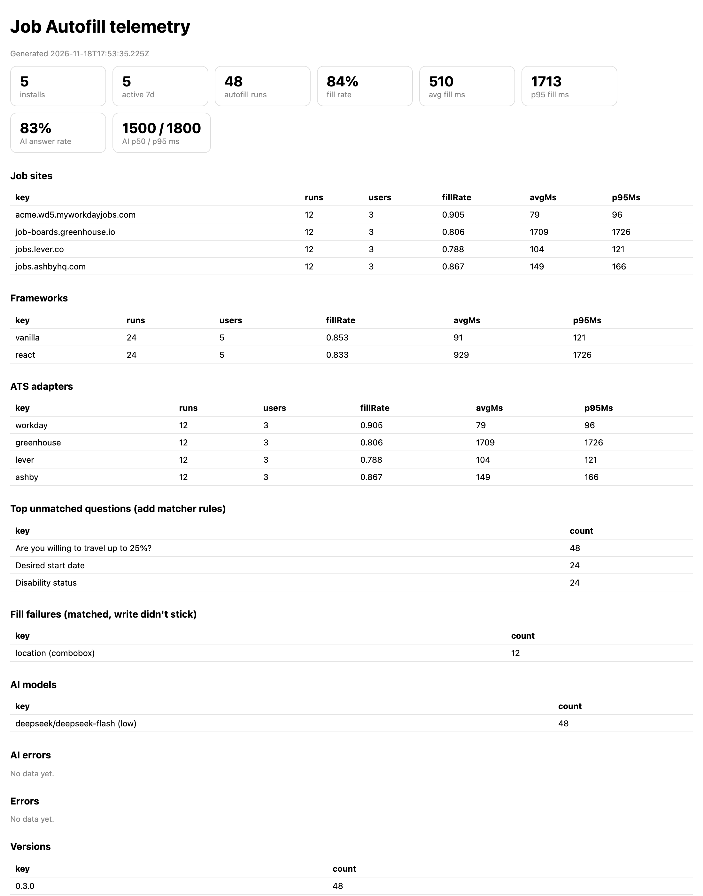

A Chrome extension that fills job applications (Workday, Greenhouse, Lever, Ashby and React, Angular and Ext JS forms) from a profile kept in your own browser. Source code: https://github.com/sree-code/job-autofill
Set up Job Autofill for me by following this guide. Stop and ask me whenever a step says "You do this".Claude does the install, build and tests and drafts your profile from your resume. You do the steps that need you: loading the extension, pasting your API key, and submitting applications.
| Item | Why | Get it |
|---|---|---|
| Google Chrome | The extension runs here | google.com/chrome |
| Node.js 20 or newer (tested on 22) | Builds the extension | nodejs.org (LTS installer) |
| Git | Downloads the source | git-scm.com |
| Claude Code | Runs this guide for you | claude.com/claude-code |
| An AI API key (optional) | Answers custom questions like “Why do you want to work here?” | DeepSeek: https://platform.deepseek.com/api_keys (default), or an Anthropic API key |
| Your resume (PDF or DOCX) | Uploaded to applications, and used to draft your profile | Your file |
Without an API key, everything except AI answers still works.
node -v (it must print v20 or higher), git --version and npm -v. If something is missing, tell the user what to install from section 1 and wait.git clone https://github.com/sree-code/job-autofill cd job-autofill npm install npm run build npm testAll tests must pass. If they don't, show the user the failing output and stop. On Windows PowerShell, run the lines one by one.
chrome://extensions in Chrome.job-autofill folder (the one that contains manifest.json). Give them its full path.{"firstName":"","middleName":"","lastName":"","preferredName":"","pronouns":"",
"email":"","phone":"","phoneDeviceType":"Mobile",
"address1":"","address2":"","city":"","state":"","postalCode":"","country":"","location":"City, ST",
"linkedin":"","github":"","portfolio":"",
"currentCompany":"","currentTitle":"","yearsExperience":"","salary":"","startDate":"","howHeard":"",
"school":"","degree":"","major":"","gradYear":"",
"workAuthorized":"Yes/No","needsSponsorship":"Yes/No","willingToRelocate":"Yes/No","previouslyEmployed":"",
"summary":"2-4 sentences","skills":"comma-separated",
"workHistory":"one line per job: Title, Company, Location, Start–End: key achievements",
"gender":"","race":"","hispanic":"","veteran":"","disability":""}
The last five (self-identification) are optional. Fill them only if the user tells you their answers.jaf-ai class.[job-autofill] report lists what was filled, what was skipped, the timing and any AI error. Fix profile gaps for skipped fields. The user reviews everything and submits only if they want to.



data-automation-id), Greenhouse, Lever, Ashby, iCIMS and SmartRecruiters.| Task | How |
|---|---|
| Fill a page | Automatic when the form appears, or the Autofill button, or Alt+Shift+F |
| Turn off auto-fill | Options → “Auto-fill when a form appears” → Off |
| Start a fresh AI session | Options → “New AI session (keep memory)”, or “Clear AI memory” |
| Update to the latest version | In the job-autofill folder: git pull, then npm install, then npm run build; then click the reload icon on chrome://extensions |
Your profile, resume and API key are stored only in Chrome on your computer (chrome.storage.local). AI questions go only to the provider you chose, using your own key.
If the maintainer has set up a metrics receiver, the options page asks once whether to share anonymous usage metrics. Nothing is sent unless you choose “Share”, and you can switch it off any time.
| Sent when you opt in | Never sent |
|---|---|
| Random install id, extension and browser version; job site hostname (no page path); detected framework/ATS; number of fields found and filled; field types filled (e.g. “email”); question labels it couldn't match (emails/numbers masked); fill and AI timings; AI provider/model; error messages | Your profile values, anything typed into forms, AI answers, API keys, resume or cover letter, full URLs, IP address (not stored) |
| Symptom | Fix |
|---|---|
| Popup says “No form script on this page” | Reload the page (tabs opened before installing don't have the script yet). |
| Toast never appears | The page may not look like an application yet. Click Autofill / Alt+Shift+F. Check the console for [job-autofill]. |
| Dropdowns not filled on Greenhouse | Keep the tab focused (in front) while it fills. Some dropdowns only open in an active tab. |
Report shows ai.error: "no-api-key" | Paste a key in Options and Save. |
DeepSeek HTTP 401 | Wrong or revoked key. Create a new one at platform.deepseek.com/api_keys. |
| A field fills, then clears | It's an autocomplete that wants a choice from its list. Pick it by hand. If metrics are on, this is reported so it can be fixed. |
npm test fails after git pull | Run npm install again, then npm run build. |
The receiver is telemetry/server.mjs (Node, no dependencies). Run it on any always-on host with persistent disk:
ADMIN_KEY=choose-a-long-secret PORT=8790 DATA_DIR=./telemetry-data npm run telemetry
Put the public URL (https://your-host/v1/events) in src/config.js as TELEMETRY_URL, commit and push. Friends get it on their next git pull and build. The dashboard is at https://your-host/?key=ADMIN_KEY and JSON at /v1/stats?key=…. It shows fill rate and timings per job site/framework/ATS, the top unmatched questions (to add matcher rules), fill failures, AI latency and answer rate, errors, versions and daily runs.
